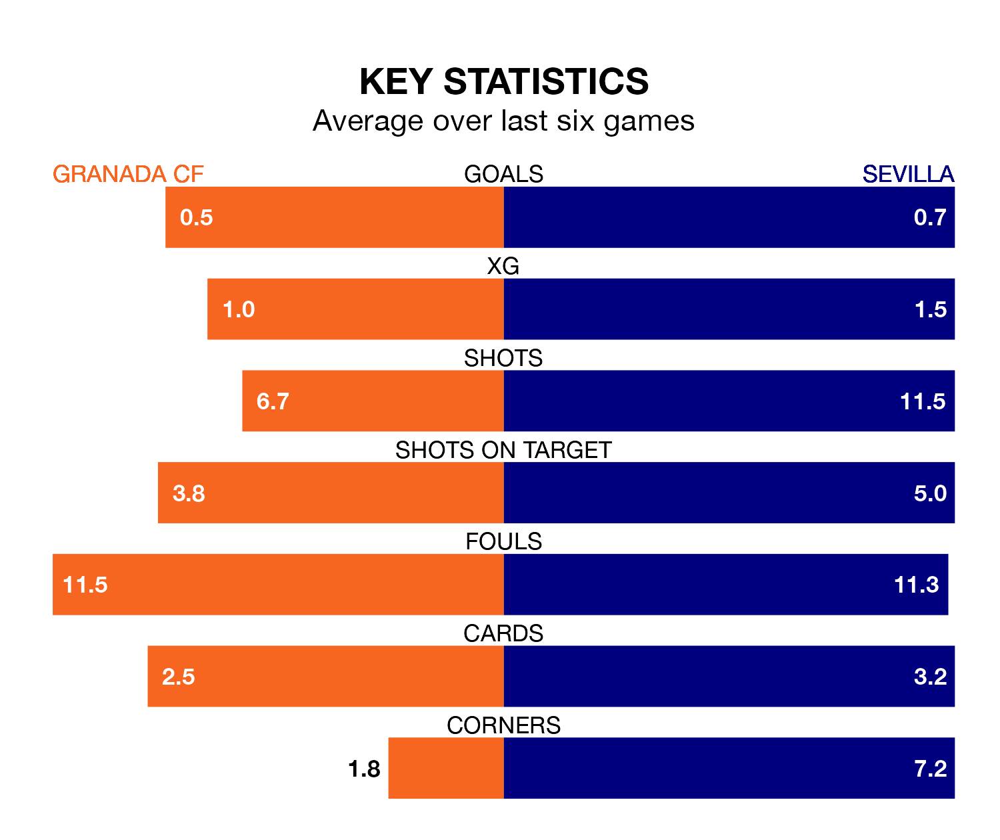

Tuesday's late match at the Estadio Nuevo Los Cármenes sees two relegation candidates play each other, as 19th-ranked Granada CF host 17th-placed Sevilla.
Granada have picked up eight points from their first eight La Liga games, with one win and five draws.
That is five points less than Sevilla have collected, having won two and drawn seven.
Granada are in terrible form in La Liga, with no wins and two draws from their last six games.
With no wins and three draws over that period, Sevilla's form is slightly better – they have taken three points from 18, compared to Granada CF's two.
In the last 10 years, Granada and Sevilla have played each other on 15 occasions. Granada won five of them, Sevilla nine, and they drew once.
On average, Granada CF scored 1.1 goals and Sevilla 2.0 in those matches.
Their last meeting was on April 8 2022, when Sevilla won 4-2 at home.
With 20 goals in 17 games so far this season, the home side are scoring at below the league average rate with 1.2 goals per game. And they are conceding more than average, letting in 37 goals at a rate of 2.2 per game.
The visitors are also below average scorers, with 1.2 goals per game, compared to a league average of 1.3. They have conceded 1.5 goals per game.
Granada's last match was on Saturday, a 1-0 loss against Celta de Vigo.
Sevilla lost 3-0 against Getafe CF last time out, also on Saturday.
